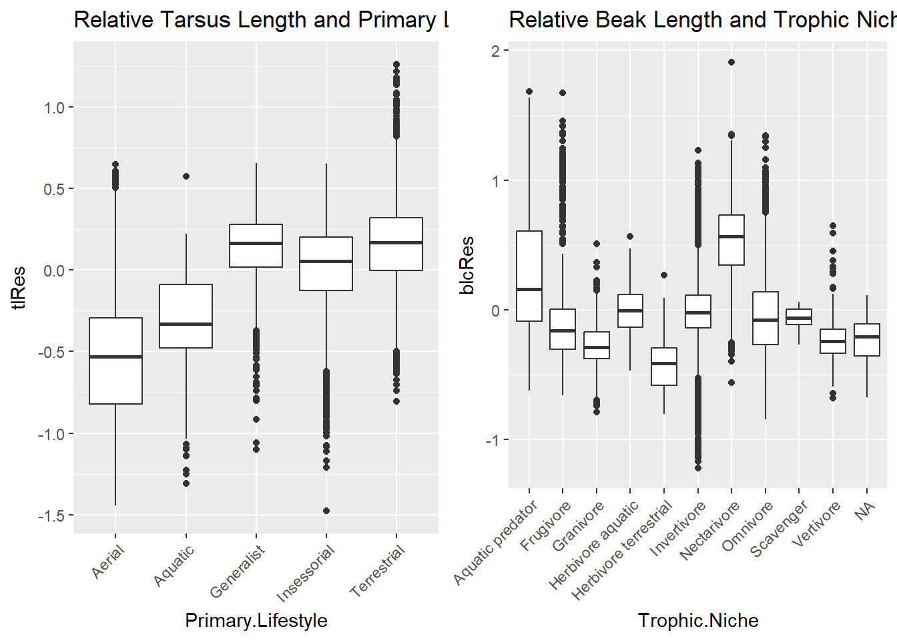

library(tidyverse)
library(ggplot2)
library(cowplot)
library(infer)
library(skimr)
f <- "https://raw.githubusercontent.com/difiore/ada-datasets/refs/heads/main/AVONETdataset1.csv"
d <- read_csv(f, col_names = TRUE)
d <- d |>
select(Species1, Family1, Order1, Beak.Length_Culmen, Beak.Width, Beak.Depth,
Tarsus.Length, Wing.Length, Tail.Length, Mass, Habitat, Migration, Trophic.Level,
Trophic.Niche, Min.Latitude, Max.Latitude, Centroid.Latitude, Primary.Lifestyle, Range.Size) |>
mutate(Migration = as.factor(Migration)) |>
mutate(Beak.Length_CulmenLog = log(Beak.Length_Culmen), Tarsus.LengthLog = log(Tarsus.Length))exercise10
Exercise 10, Practice ANOVA
In this exercise I will use the AVONET data set to practice using ANOVA and checking models.
Set up: Libraries and Data Wrangling
Before starting the challenges, I need to load in my libraries and the data. Additionally, I need to filter down my data to the 19 variables of interest. Additionally, I will convert Migration to a factor and create 2 new variables to be the logged values of Beak.Length_Culmen and Tarsus.Length as I will need these converted values for later analysis.
Challenge 1
In this first challenge I will be looking at the relationships of different variables to the logged mass of the birds in the data set.
Step 1
In this first step, I am doing some initial visualization to examine the relationship log(Mass) has with variables Trophic.Level and Migration behavior. I store each plot as a variable and call them in the plot_grid() function from the {cowplot} function to visualize these plots next to each other.
#trophic level in relation to log(Mass)
tlM <- ggplot(data = d |> drop_na(Trophic.Level), aes(x = Trophic.Level, y = log(Mass))) +
geom_boxplot() +
ggtitle("log(Mass) and Trophic Level")
#Migration (as factor) in relation to log(Mass)
mm <- ggplot(data = d |> drop_na(Migration), aes(x = Migration, y = log(Mass))) +
geom_boxplot() +
ggtitle("log(Mass) and Migration")
plot_grid(tlM, mm)
Step 2
Next, I will run two models using the lm() function.. The first model is the relationship between log(Mass) and Trophic.Level, and the second model looks at the relationship between log(Mass) and Migration behavior.
Based on the F-statistic for each model (78.42 and 144.5 respectively) we can reject the null hypothesis of a F-statistic of 0, indicating that the variance in log(Mass) between trophic.level and migration behavior groups is significant.
Based on the regression coefficients for the Migration model, both levels 2 and 3 are different from the reference level, which is 1. Using relevel() to change the reference level and rerun the model reveals that when level 2 is the reference level (m2.2), levels 1 and 3 differ from the reference level. Additionally when level 3 is the reference level (m2.3), levels 1 and 2 differ from it.
#Mass and trophic level model
m1 <- lm(log(Mass) ~ Trophic.Level, data = d)
summary(m1)
Call:
lm(formula = log(Mass) ~ Trophic.Level, data = d)
Residuals:
Min 1Q Median 3Q Max
-3.4229 -1.1551 -0.3028 0.8982 7.5526
Coefficients:
Estimate Std. Error t value Pr(>|t|)
(Intercept) 3.80834 0.01967 193.632 < 2e-16 ***
Trophic.LevelHerbivore 0.25639 0.03406 7.528 5.54e-14 ***
Trophic.LevelOmnivore 0.01422 0.04116 0.345 0.73
Trophic.LevelScavenger 4.63189 0.34447 13.446 < 2e-16 ***
---
Signif. codes: 0 '***' 0.001 '**' 0.01 '*' 0.05 '.' 0.1 ' ' 1
Residual standard error: 1.538 on 11000 degrees of freedom
(5 observations deleted due to missingness)
Multiple R-squared: 0.02094, Adjusted R-squared: 0.02067
F-statistic: 78.42 on 3 and 11000 DF, p-value: < 2.2e-16#Mass and Migration model
m2 <- lm(log(Mass) ~ Migration, data = d)
summary(m2)
Call:
lm(formula = log(Mass) ~ Migration, data = d)
Residuals:
Min 1Q Median 3Q Max
-3.8924 -1.1769 -0.3088 0.9152 7.8427
Coefficients:
Estimate Std. Error t value Pr(>|t|)
(Intercept) 3.77457 0.01636 230.710 < 2e-16 ***
Migration2 0.75971 0.04731 16.059 < 2e-16 ***
Migration3 0.37647 0.05155 7.303 3.02e-13 ***
---
Signif. codes: 0 '***' 0.001 '**' 0.01 '*' 0.05 '.' 0.1 ' ' 1
Residual standard error: 1.535 on 10983 degrees of freedom
(23 observations deleted due to missingness)
Multiple R-squared: 0.02563, Adjusted R-squared: 0.02546
F-statistic: 144.5 on 2 and 10983 DF, p-value: < 2.2e-16#Releveling migration levels
d$Migration <- relevel(d$Migration, ref = 2)
m2.2 <- lm(log(Mass) ~ Migration, data = d)
summary(m2.2)
Call:
lm(formula = log(Mass) ~ Migration, data = d)
Residuals:
Min 1Q Median 3Q Max
-3.8924 -1.1769 -0.3088 0.9152 7.8427
Coefficients:
Estimate Std. Error t value Pr(>|t|)
(Intercept) 4.53428 0.04439 102.149 < 2e-16 ***
Migration1 -0.75971 0.04731 -16.059 < 2e-16 ***
Migration3 -0.38324 0.06603 -5.804 6.67e-09 ***
---
Signif. codes: 0 '***' 0.001 '**' 0.01 '*' 0.05 '.' 0.1 ' ' 1
Residual standard error: 1.535 on 10983 degrees of freedom
(23 observations deleted due to missingness)
Multiple R-squared: 0.02563, Adjusted R-squared: 0.02546
F-statistic: 144.5 on 2 and 10983 DF, p-value: < 2.2e-16d$Migration <- relevel(d$Migration, ref = 3)
m2.3 <- lm(log(Mass) ~ Migration, data = d)
summary(m2.3)
Call:
lm(formula = log(Mass) ~ Migration, data = d)
Residuals:
Min 1Q Median 3Q Max
-3.8924 -1.1769 -0.3088 0.9152 7.8427
Coefficients:
Estimate Std. Error t value Pr(>|t|)
(Intercept) 4.15104 0.04889 84.909 < 2e-16 ***
Migration2 0.38324 0.06603 5.804 6.67e-09 ***
Migration1 -0.37647 0.05155 -7.303 3.02e-13 ***
---
Signif. codes: 0 '***' 0.001 '**' 0.01 '*' 0.05 '.' 0.1 ' ' 1
Residual standard error: 1.535 on 10983 degrees of freedom
(23 observations deleted due to missingness)
Multiple R-squared: 0.02563, Adjusted R-squared: 0.02546
F-statistic: 144.5 on 2 and 10983 DF, p-value: < 2.2e-16#Reset reference level
d$Migration <- relevel(d$Migration, ref = 1)Step 3
Now I will conduct a post-hoc test to determine if there is significant differences between the three migration categories as they relate to log(Mass). I do this with the Tukey Honest Significant Differences Test which compares each possible pair of variables and produces an adjusted p-value for how much they differ from each other. Based on the adjusted p-values, which are all 0, each of the three levels differ significantly from each other. Additionally, by plotting the confidence intervals, we can confirm this differences because none of the confidence intervals intersect with 0.
m2aov <- aov(log(Mass) ~ Migration, data = d)
posthoc <- TukeyHSD(m2aov, which = "Migration", conf.level = 0.95)
posthoc Tukey multiple comparisons of means
95% family-wise confidence level
Fit: aov(formula = log(Mass) ~ Migration, data = d)
$Migration
diff lwr upr p adj
2-3 0.3832374 0.2284536 0.5380211 0
1-3 -0.3764693 -0.4973105 -0.2556282 0
1-2 -0.7597067 -0.8705977 -0.6488157 0plot(posthoc, xlim = c(-2, 2))Step 4
Next I will use a permutation approach with tools from the {infer} package to generate a null distribution of F-statistic values for the log(Mass) in relation to Trophic.Level model. This allows us to test our model and again confirm that the differences between the relationship of each trophic.level group to log(Mass) is significant. Based on the {infer} tools, the p-value is significant, as it is very small. By plotting the p-value on the null distribution and then by using the get_p_value() function, we see that the difference is very significant.
#Origin F stat
original.F <- aov(log(Mass) ~ Trophic.Level, data = d) |>
broom::tidy()|>
filter(term == "Trophic.Level")
original.F# A tibble: 1 × 6
term df sumsq meansq statistic p.value
<chr> <dbl> <dbl> <dbl> <dbl> <dbl>
1 Trophic.Level 3 557. 186. 78.4 3.43e-50#Permutation distribution using {infer}
d <- d |> mutate(logMass = log(Mass))
permuted.F <- d |>
specify(logMass ~ Trophic.Level) |>
hypothesize(null = "independence") |>
generate(reps = 1000, type = "permute") |>
calculate(stat = "F")
visualize(permuted.F) +
shade_p_value(obs_stat = original.F$statistic, direction = "greater")
p.value <- permuted.F |>
get_p_value(obs_stat = original.F$statistic, direction = "greater")
p.value# A tibble: 1 × 1
p_value
<dbl>
1 0Challenge 2
In this next challenge, we will use one- and two-factor anovas on some newly produced variables.
Step 1
First, we will create these new variables, which will be relative beak length and relative tarsus length. These will be calculated based on the residuals of these two variables logged in relation to log(Mass).
m3 <- lm(Beak.Length_CulmenLog ~ log(Mass), data = d)
m4 <- lm(Tarsus.LengthLog ~ log(Mass), data = d)
d <- d |>
mutate(blcRes = m3$residuals, tlRes = m4$residuals)Step 2
Next, I will make some boxplots. The first will plot relative tarsus length in relation to Primary.Lifestyle and the second will be relative beak length in relation to Trophic.Niche. I will again store these plots as variable and then use the plot_grid() function to view them together
a <- ggplot(data = d, mapping = aes(x = Primary.Lifestyle, y = tlRes)) +
geom_boxplot() +
ggtitle("Relative Tarsus Length and Primary Lifestyle")
b <- ggplot(data = d, mapping = aes(x = Trophic.Niche, y = blcRes)) +
geom_boxplot() +
ggtitle("Relative Beak Length and Trophic Niche")
plot_grid(a, b)
Step 3
Next, I will run some ANOVAs to see how range size is associated with Migration. First, I will remove all missing migration observations and log transform the range size variable since it is not normally distributed.
Based on the global model, range size is associated with Migration behavior style (F-stat = 520.3, p < 0.001) and the R-squared value indicates that 8.69% of variance is associated with Migration.
Migration categories 2 and 3 both differ significantly from the reference level which is category 1. After re-leveling, we see the same relationship when the reference level is 2 or 3, showing significant differences across the three categories. This is reinforced again when we run a Tukey Honest Significant Differences test and plot the confidence intervals.
d <- d |>
mutate(logRange = log(Range.Size))
#Migration and Geographic range
rangM1 <- lm(logRange ~ Migration, data = d)
summary(rangM1)
Call:
lm(formula = logRange ~ Migration, data = d)
Residuals:
Min 1Q Median 3Q Max
-14.5710 -1.4521 0.4357 1.9763 5.9271
Coefficients:
Estimate Std. Error t value Pr(>|t|)
(Intercept) 14.55082 0.08896 163.568 < 2e-16 ***
Migration2 -0.73233 0.12015 -6.095 1.13e-09 ***
Migration1 -2.51702 0.09380 -26.834 < 2e-16 ***
---
Signif. codes: 0 '***' 0.001 '**' 0.01 '*' 0.05 '.' 0.1 ' ' 1
Residual standard error: 2.785 on 10934 degrees of freedom
(72 observations deleted due to missingness)
Multiple R-squared: 0.0869, Adjusted R-squared: 0.08674
F-statistic: 520.3 on 2 and 10934 DF, p-value: < 2.2e-16#Releveling to see whats different
d$Migration <- relevel(d$Migration, ref = 2)
rangM2 <- lm(logRange ~ Migration, data = d)
summary(rangM2)
Call:
lm(formula = logRange ~ Migration, data = d)
Residuals:
Min 1Q Median 3Q Max
-14.5710 -1.4521 0.4357 1.9763 5.9271
Coefficients:
Estimate Std. Error t value Pr(>|t|)
(Intercept) 13.81850 0.08076 171.099 < 2e-16 ***
Migration3 0.73233 0.12015 6.095 1.13e-09 ***
Migration1 -1.78469 0.08606 -20.737 < 2e-16 ***
---
Signif. codes: 0 '***' 0.001 '**' 0.01 '*' 0.05 '.' 0.1 ' ' 1
Residual standard error: 2.785 on 10934 degrees of freedom
(72 observations deleted due to missingness)
Multiple R-squared: 0.0869, Adjusted R-squared: 0.08674
F-statistic: 520.3 on 2 and 10934 DF, p-value: < 2.2e-16d$Migration <- relevel(d$Migration, ref = 3)
rangM3 <- lm(logRange ~ Migration, data = d)
summary(rangM3)
Call:
lm(formula = logRange ~ Migration, data = d)
Residuals:
Min 1Q Median 3Q Max
-14.5710 -1.4521 0.4357 1.9763 5.9271
Coefficients:
Estimate Std. Error t value Pr(>|t|)
(Intercept) 12.03381 0.02974 404.62 <2e-16 ***
Migration2 1.78469 0.08606 20.74 <2e-16 ***
Migration3 2.51702 0.09380 26.83 <2e-16 ***
---
Signif. codes: 0 '***' 0.001 '**' 0.01 '*' 0.05 '.' 0.1 ' ' 1
Residual standard error: 2.785 on 10934 degrees of freedom
(72 observations deleted due to missingness)
Multiple R-squared: 0.0869, Adjusted R-squared: 0.08674
F-statistic: 520.3 on 2 and 10934 DF, p-value: < 2.2e-16#Relevel back to original
d$Migration <- relevel(d$Migration, ref = 1)
#Tukey HSD
rangM_aov <- aov(logRange ~ Migration, data = d)
rangeM_THSD <- TukeyHSD(rangM_aov, which = "Migration", conf.level = 0.95)
rangeM_THSD Tukey multiple comparisons of means
95% family-wise confidence level
Fit: aov(formula = logRange ~ Migration, data = d)
$Migration
diff lwr upr p adj
2-1 1.7846901 1.582952 1.986428 0
3-1 2.5170168 2.297150 2.736883 0
3-2 0.7323266 0.450689 1.013964 0plot(rangeM_THSD, xlim = c(-3, 3))Step 4
Now I will look at birds specifically in the infraorder “Passeriformes”. I will run two one-factor ANOVAs, one looking at the association between relative beak length and primary lifestyle, and another looking at the association between relative beak length and trophic level. In doing so, I will make three boxplots which look at how each variable relates to relative beak length separately and one with them together. I will also run linear models for each predictor. Based on the linear models, both primary lifestyle (all 4 levels) and trophic level (all 3 levels) are associated with variance in beak length.
dp <- d |>
filter(Order1 == "Passeriformes")
p1 <- ggplot(data = dp, mapping = aes(x = Primary.Lifestyle, y = blcRes)) +
geom_boxplot() +
ggtitle("Rel Beak Length:Primary Lifestyle")
p2 <- ggplot(data = dp, mapping = aes(x = Trophic.Level, y = blcRes)) +
geom_boxplot() +
ggtitle("Rel Beak Length:Trophic Level")
plot_grid(p1, p2)dp <- dp |>
mutate(PL.TL = paste(Primary.Lifestyle, Trophic.Level))
p3 <- ggplot(data = dp, mapping = aes(x = PL.TL, y = blcRes)) +
geom_boxplot() +
ggtitle("Rel Beak Length: Lifestyle & Trophic Level") +
theme(axis.text.x = element_text(angle = 45, hjust = 1))
p3#Primary Lifestyle and Relative beak length
Plm1 <- lm(blcRes ~ Primary.Lifestyle, data = dp)
summary(Plm1)
Call:
lm(formula = blcRes ~ Primary.Lifestyle, data = dp)
Residuals:
Min 1Q Median 3Q Max
-0.6314 -0.1380 -0.0172 0.1118 1.2241
Coefficients:
Estimate Std. Error t value Pr(>|t|)
(Intercept) -0.34950 0.02158 -16.19 <2e-16 ***
Primary.LifestyleGeneralist 0.27926 0.02306 12.11 <2e-16 ***
Primary.LifestyleInsessorial 0.35342 0.02181 16.20 <2e-16 ***
Primary.LifestyleTerrestrial 0.27924 0.02249 12.42 <2e-16 ***
---
Signif. codes: 0 '***' 0.001 '**' 0.01 '*' 0.05 '.' 0.1 ' ' 1
Residual standard error: 0.2158 on 6610 degrees of freedom
Multiple R-squared: 0.05581, Adjusted R-squared: 0.05538
F-statistic: 130.2 on 3 and 6610 DF, p-value: < 2.2e-16#Trophic Level and Relative Beak Length
Plm2 <- lm(blcRes ~ Trophic.Level, data = dp)
summary(Plm2)
Call:
lm(formula = blcRes ~ Trophic.Level, data = dp)
Residuals:
Min 1Q Median 3Q Max
-0.67045 -0.13692 -0.02063 0.11129 1.23116
Coefficients:
Estimate Std. Error t value Pr(>|t|)
(Intercept) -0.003170 0.003501 -0.906 0.36518
Trophic.LevelHerbivore -0.118713 0.006956 -17.066 < 2e-16 ***
Trophic.LevelOmnivore 0.017902 0.006606 2.710 0.00675 **
---
Signif. codes: 0 '***' 0.001 '**' 0.01 '*' 0.05 '.' 0.1 ' ' 1
Residual standard error: 0.2165 on 6611 degrees of freedom
Multiple R-squared: 0.05001, Adjusted R-squared: 0.04972
F-statistic: 174 on 2 and 6611 DF, p-value: < 2.2e-16Step 5
Now, I will run a two-factor anova to see how these two predictors associate with relative beak length. Based on the output, I would conclude that differences in relative beak length can be explained by each species primary lifestyle and trophic level.
P2wayaov <- aov(data = dp, blcRes ~ Primary.Lifestyle + Trophic.Level)
summary(P2wayaov) Df Sum Sq Mean Sq F value Pr(>F)
Primary.Lifestyle 3 18.20 6.067 138.1 <2e-16 ***
Trophic.Level 2 17.68 8.838 201.2 <2e-16 ***
Residuals 6608 290.24 0.044
---
Signif. codes: 0 '***' 0.001 '**' 0.01 '*' 0.05 '.' 0.1 ' ' 1Step 6
Now I will run another two-factor anova but I will add an interaction term to see how the interaction of lifestyle and trophic level explains beak length. Based on the output, the interaction of these two variables has a significant effect on relative beak length.
PaovInteraction <- aov(data = dp,
blcRes ~ Primary.Lifestyle + Trophic.Level + Primary.Lifestyle:Trophic.Level)
summary(PaovInteraction) Df Sum Sq Mean Sq F value Pr(>F)
Primary.Lifestyle 3 18.20 6.067 142.15 <2e-16 ***
Trophic.Level 2 17.68 8.838 207.11 <2e-16 ***
Primary.Lifestyle:Trophic.Level 4 8.41 2.102 49.26 <2e-16 ***
Residuals 6604 281.83 0.043
---
Signif. codes: 0 '***' 0.001 '**' 0.01 '*' 0.05 '.' 0.1 ' ' 1Step 7
Now I will create an interaction plot to visualize the interaction between the predictors.
interaction.plot(x.factor= dp$Primary.Lifestyle, xlab = "Primary Lifestyle", trace.factor = dp$Trophic.Level,
trace.label = "Trophic Level", fun = base::mean, response = dp$blcRes, ylab = "Relative Beak Length")
Step 8
As a final step, I will determine if the variances across the group levels in the different models are roughly equal. We ran three main models in this challenge, log(Range Size) ~ Migration, relative beak length ~ Primary Lifestyle, and relative beak length ~ Trophic Level. Each of these three factors (Migration, Primary Lifestyle, and Trophic Level) have different levels to them. Here I will determine if the variances between the levels in each group is roughly equal or not to make sure out modeling method is appropriate. Then we will look at the distribution of the residuals of each model to make sure they follow a normal distribution. I plotted each level of each category first as violin plots to look at their distribution. I then calculated the standard deviation of either range of relative beak length for each category before testing for equal variances. After these calculations, I plotted the histograms of the residuals. Based on the comparisons of the standard deviations, all groups show equal variance as that have a value of less than 2. Additionally, upon visual inspection, the data appears to be normally distributed
#Migration and range size
rM <- ggplot(data = d |> drop_na(Migration), mapping = aes(x = Migration, y = logRange)) +
geom_violin() +
ggtitle("All Species, Geographic Range and Migration")
mig <- d |>
drop_na(Migration) |>
drop_na(logRange) |>
group_by(Migration) |>
summarize(sdRange = sd(logRange))
s <- max(mig$sdRange)/min(mig$sdRange)
#Rel beak length and Primary Lifestyle
bPL <- ggplot(data = dp, mapping = aes(x = Primary.Lifestyle, y = blcRes)) +
geom_violin() +
ggtitle("Passeriformes, Relative Beak Length and Primary Lifestyle") +
theme(axis.text.x = element_text(angle = 45, hjust = 1))
life <- dp |>
drop_na(Primary.Lifestyle) |>
group_by(Primary.Lifestyle) |>
summarize(sdBeak = sd(blcRes))
p <- max(life$sdBeak)/min(life$sdBeak)
#Rel beak length and Trophic Level
bTL <- ggplot(data = dp, mapping = aes(x = Trophic.Level, y = blcRes)) +
geom_violin() +
ggtitle("Passeriformes, Relative Beak Length and Trophic Level") +
theme(axis.text.x = element_text(angle = 45, hjust = 1))
troph <- dp |>
drop_na(Trophic.Level) |>
group_by(Trophic.Level) |>
summarize(sdBeak = sd(blcRes))
t <- max(troph$sdBeak)/min(troph$sdBeak)
plot_grid(rM, bPL, bTL)print(paste("Migration Varience:", s, "; Primary Lifestyle Varience:", p, "; Trophic Level Varience:", t))[1] "Migration Varience: 1.33276434989884 ; Primary Lifestyle Varience: 1.24393292593595 ; Trophic Level Varience: 1.33619408884105"#Plots of residules
#Migrarion and range size
hist(rangM1$residuals)#Lifestyle and beak size
hist(Plm1$residuals)#Trophic level and beak size
hist(Plm2$residuals)